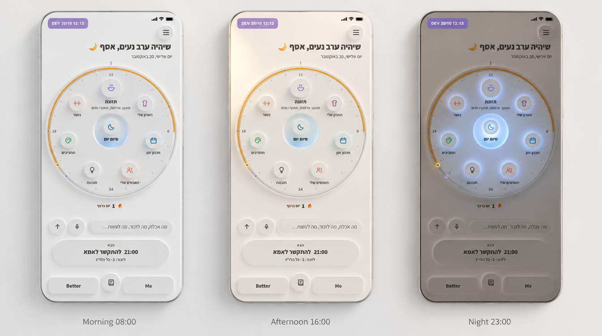
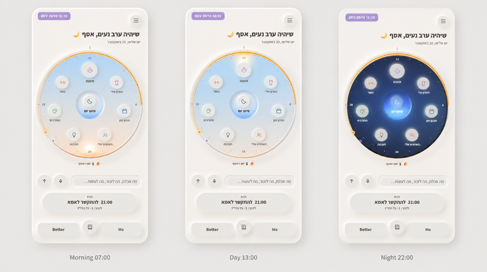
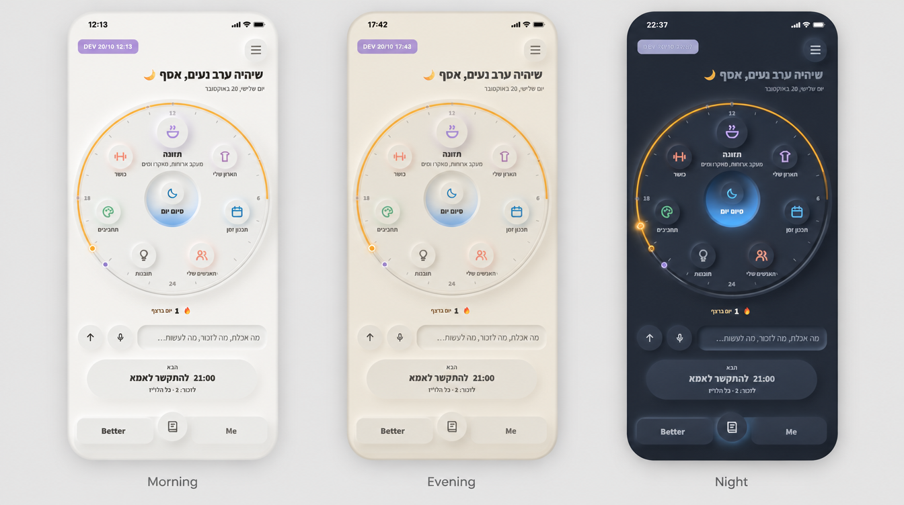

המסך שמשתנה עם שעות היום
שלוש דרכים לעשות את זה. בכל תמונה מוצג אותו מסך בשלוש שעות שונות של היום. אלה הדמיות שנוצרו מצילום של החוגה שיש עכשיו ב־dev. האפליקציה כבר יודעת לחלק את היום לשישה שלבים, מהשחר ועד הלילה, כך שהבסיס לזה קיים. ב־dev לא שיניתי כלום.

החומר נשאר לבן, רק האור זז
בבוקר האור מגיע נמוך מצד אחד והצללים נופלים לצד השני. אחר הצהריים הוא מגיע מהצד השני, חמים קצת יותר. בלילה החדר מתעמעם, והאור היחיד מגיע מהבאר של "סיום יום" ומאיר את החלקים מהמרכז החוצה. זה מתאים לערב, שבו הסיכום הוא העיקר.
ביום השינוי עדין מאוד, ובהדמיה הוא כמעט לא מורגש בין בוקר לאחר הצהריים. הלילה הוא החלק החזק.

כמו שעון יוקרה עם פני ירח
כל המסך נשאר לבן, ורק פני החוגה משתנים לפי השמיים של השעה: שחר אפרסקי־תכלת בבוקר, תכלת בהיר בצהריים, וכחול לילה עמוק עם כוכבים קטנים וירח בלילה. החוגה הופכת לחלון קטן לשמיים.
בלילה פני החוגה כהים מאוד ליד מסך לבן, וזה ניגוד חזק. צריך לבדוק שהשמות על הטבעת קריאים על הכחול.

לבן בבוקר, חול בערב, כהה בלילה
אותן צורות בדיוק, אבל החומר משתנה: לבן ואוורירי בבוקר, חם בגוון חול בשעת הזהב, ובלילה חומר כהה ורך שנוח לעיניים עייפות. הבאר הכחולה ונקודת הענבר הם הדברים הכי מוארים במסך.
זה הכי משמעותי לשימוש בלילה, אבל גם הכי הרבה עבודה: כל מסך באפליקציה צריך גרסה כהה, לא רק המסך הראשי. אפשר להתחיל מהמסך הראשי ומסיום יום.
כדי לבחור, כתוב לי 1, 2 או 3, או שילוב, למשל "3, עם הכוכבים של 2 בלילה".